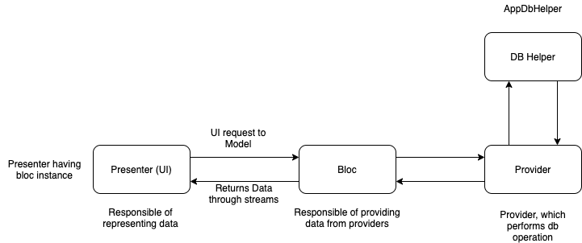

Expense - Project Structure Document
An Expense Manager Application developed using flutter with most useful features to manage daily expense., Following are information about Project Structure and files.
A few resources to get you started if you’re new to Flutter:
For help getting started with Flutter, view our
online documentation, which offers tutorials,
samples, guidance on mobile development, and a full API reference.
1: Open this project in your preferable IDE Android Studio or VS Code.
2: Get Plugins: Execute flutter pub get command, For the first to get all implemented plugin codes run Pub get command of pubspec.yaml file.
3: Connect device and run: After successful execution of pub get command all plugin import errors will be gone and you can run this project.
Enjoy having awesome Expense Manager Application :)

It contains base-view files (interface).
This interface which will be implemented by any of the UI widget, and will be having common methods, If you want to have common thing to do for all widgets you can add your common method to this.
Contains all the db related files which includes DatabaseHelper, Providers, Tables and other db related files.
AppDatabaseInfo:
It contains all the database related information, It implementing DBInfo, IMigrationTask class which provides database information and db migration support,
It having defination of whole database such as creating/updating or tables, database name, version and migration, If you want to do modification in your db you can refer this file in order to change the definations, any kind of db modification will be define here.
DBInfo:
An abstract class which having all abstract methods and variables which is implemented by AppDatabaseInfo class, You add/remove abstract method to this in order to improve db structure.
DBHelper:
DBHelper is singleton class, which is responsible of initilizing db and updating db if requre, it will open/close, and provide the instance of database.
Tables:
Which contains static const of all the table create queries, If you’re adding new table you can define table creation query to this file.
Contains main theme widget which is responsible of changing theme of whole application, and other helper classes.
MultiTheme
This is statefull widget which having params to get all themes, and builder, and returns builder with context and current theme, Used Stream builder to get notify through ThemeProvider whenever user request for change theme, it will rebuild the whole app which new theme color.
ThemeProvider:
This is singleton, which is responsible of add/delete theme and changing of theme, Using provider we can get the defined colors of current selected theme.
ThemeColors:
This is Model class which have primary colors variable defined, you can modifiy this model in order to add more colors as primary for theme data.
Themes:
Defining all theme colors here,
This class is having all themes defination and const keys of theme colors, currently we have two theme in this project light and dark,
All the colors of light/dark theme is defined here if you want change any color such text, background, icon etc, you can define new or update the values of exitiing color in order to change the theme colors.
Contains all the UI widgets File To represent all data to user.
All these folders will be having bloc, support and UI widget file where:
Bloc: Bloc is responsible to make data related operation based on request from UI widgets, Bloc is having all the data provider instance to perform db operation based on request.
UI-Widget: Responsible to represent data to user with different widgets, And will be having bloc instance to get data to represent.
Support: Will having all the supported widgets to represent particular module.
It contains all the utility components.